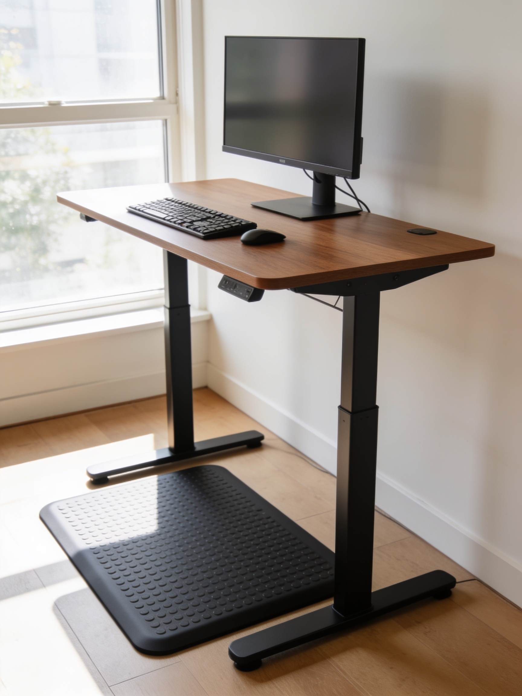

Is a Standing Desk Worth It? What We Found After Six Months
We logged sit-stand time across our whole editorial team. The results surprised the skeptics most.

Last October, we replaced every desk in our office with an electric sit-stand model and made the whole team log their usage — every height change, every day, for six months. Not because we doubted standing desks work as furniture; they obviously do. The question was the one readers actually ask us: will I still be using the standing part in March, or will I have bought a very expensive sitting desk?
The honeymoon is real, and it ends in week three
Everyone stood a lot in October. Our team averaged 2.9 hours of standing per workday in the first two weeks. By mid-November, that average had collapsed to 55 minutes, and two of five people had functionally stopped raising their desks at all. If we had ended the experiment there, the verdict would have been the cynical one: standing desks are stationary bikes for your office.
What separated the users from the quitters
By month six, three of five people had stabilized into genuine daily use — 60 to 100 minutes of standing, most days. What they had in common wasn't discipline. It was triggers and feet:
- They tied standing to a task, not a timer. "I stand for meetings and email" survived. "I stand every 45 minutes when the app pings me" did not — every single timer-user quit. The pings got dismissed like any other notification.
- They bought an anti-fatigue mat in week one. Both quitters stood on hard floor. This sounds like an ad for mats; it is simply what our spreadsheet says. Standing on bare concrete-slab flooring is unpleasant enough to quietly kill the habit.
- They kept a "standing setup." Monitor arm set so the screen height worked in both positions, no re-rigging required. Friction is fatal: one tester's desk required moving a laptop stand every time, and that desk stopped moving by Thanksgiving.
What standing actually did (and didn't do)
Nobody lost weight; the calorie difference between sitting and standing is famously modest, and our experience matched. What our regular standers consistently reported instead: less afternoon back and hip stiffness (all three), better post-lunch alertness (two of three), and — unexpectedly — shorter meetings, because people who take calls standing apparently end them faster. The two quitters reported no change in anything, which is what you'd expect from people who returned to sitting full-time.
So: worth it?
Our honest scorecard: a 60% long-term adoption rate, meaningful comfort benefits for the adopters, zero benefits for the quitters, at $400–700 per desk. That math works if — and only if — you set yourself up like the adopters did. Concretely:
- Buy the mat the same day you buy the desk. Treat it as part of the price.
- Pick two specific tasks you'll always do standing. Ignore reminder apps.
- Configure your monitor once so that switching takes one button-press and nothing else.
- If you've had a desk for a month and it hasn't moved in a week, sell it without shame. You have your answer, and the used market is healthy.
A standing desk is not a health intervention. It's an option you're buying — and options are only worth paying for if you've arranged your day so they actually get exercised.